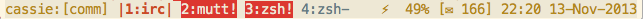
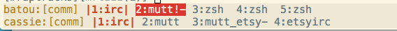

My Tmux Setup
I’ve been using tmux as my main terminal multiplexer for about 3 years now and have refined my configuration over time to fit my daily workflow. Which is usually a mix of writing code, chef recipes, remote login into different servers and various shell tasks. This is a flexible setup that doesn’t concentrate too much on doing a specific thing or replacing an IDE inside of tmux. The configuration and shell aliases are up on GitHub if you want to check them out.
The Basics
Let’s start with the basics. By default tmux uses ctrl-b as its prefix key
for commands and escaping. But the years of using screen have ingrained in my
muscle memory to use ctrl-a, so I switched with this simple setting:
unbind C-b
set -g prefix C-a
I also added a couple of important baseline settings to make tmux in general
look nice in colored terminals and work with unicode in the display window as
well as in the status bar. I also wanted to have the window numbering start at
1, since it doesn’t make sense to me for accessing succesive windows to start
on the right side of the keyboard and then continue on the left side. And I
also wanted to have a simple shortcut (ctrl-a r) to reload configuration in
a live tmux session whenever I change something.
# force a reload of the config file
unbind r
bind r source-file ~/.tmux.conf
# start window numbering at 1 for easier switching
set -g base-index 1
# colors
set -g default-terminal "screen-256color"
# unicode
setw -g utf8 on
set -g status-utf8 on
The next important change was modifying the status bar. There are a lot of crazy things you can do and overload your tmux status bar with more information than you could ever need. I try to balance the contents of my status bar to only have information in there I actually care about. This means I have the local hostname and the name of the current session on the left side and then all the windows. The right side contains the current battery status (when I’m on a laptop), the status of my mail (inbox, to read, to answer) and the time and date. Although I see less and less benefit of having the mail check in there and will probably remove it soon (currently it’s only showing the inbox mail count). I also have the status bar configured to show terminal bells in red so I always know when there is something that needs attention in a window (I have weechat and mutt set to alert via terminal bells). For the colorscheme I use a solarized light theme as you can see in the screenshot:

And the configuration for my status bar looks like this:
# status bar config
set -g status-left "#h:[#S]"
set -g status-left-length 50
set -g status-right-length 50
set -g status-right "⚡ #(~/bin/tmux-battery) [✉#(~/bin/imap_check.py)] %H:%M %d-%h-%Y"
setw -g window-status-current-format "|#I:#W|"
set-window-option -g automatic-rename off
# listen to alerts from all windows
set -g bell-action any
This is the base configuration I use for basic project sessions with tmux. I have two simple shell aliases to make it easier to re-attach to a session and create new ones based on the current directory I’m in:
alias tma='tmux attach -d -t'
alias git-tmux='tmux new -s $(basename $(pwd))'
With those I can ran tma <tab> in any shell and get a tab completion list
for all the current sessions running. Which is handy when logging into a
machine or generally working in a new shell. The second one I usually use when
I checked something in a local project (which are usually in git hence the
name of the alias) and then decided that I want a proper workspace but don’t
have an existing session already. The alias will just create a new session on
the spot and name it after the current directory name. This also has the big
advantage that all new shells spawned inside of tmux (e.g. opening a new
window with ctrl-a c) will be started in that directory. Within those open
sessions I have some more important shortcuts I use often. They allow me to
cycle through panes (vertical or horizontal splits in a window created with
ctrl-a V and ctrl-a H) with ctrl-a a and to switch between windows with
ctrl-a <tab>.
# rebind pane tiling
bind V split-window -h
bind H split-window
# quick pane cycling
unbind ^A
bind ^A select-pane -t :.+
# screen like window toggling
bind Tab last-window
bind Escape copy-mode
And last but not least in every basic setup - as an avid vim user - movement
commands live on the home row of course. And different panes can be selected
with ctrl-a and the corresponding movement command.
# vim movement bindings
set-window-option -g mode-keys vi
bind h select-pane -L
bind j select-pane -D
bind k select-pane -U
bind l select-pane -R
Next Level
I used to use tmux sessions in multiple tabs in iTerm for a long time. However these sessions became very long living and whenever I needed to update iTerm (which wasn’t that often to be honest) I had to recreate the tabs again as I wanted. Additionally I felt it was unnecessary to have multiple ways of doing basically the same thing (iTerm tabs and tmux windows/sessions) when I can just decide to use one. So I decided to switch to tmux as the main working environment on the laptop for everything. This means I have a tmux session on my laptop dedicated to communication which has a window that runs mosh with an attached tmux session from the server where I run weechat. And another window that does the same to my work VM which runs my work IRC client. And another window that just runs mutt for email reading. This means at any given time I have two nested tmux sessions as you can see in the screenshot below:

This lets me reattach the communications session even when I accidentally close my terminal and have it be exactly how I left it off. Even when I don’t connect to a remote host, I often have nested tmux sessions locally since I use it basically like terminal tabs. This is very useful but needs one more setting in the configuration to work. Since both nested tmux sessions expect the same meta command, I have this stanza in my configuration:
bind-key a send-prefix
This sends the command prefix to the inner tmux session when I hit ctrl-a a thus enabling me to execute commands in nested tmux sessions.
In order to easily switch between sessions I mainly use to important
commands. The first one is the tmux built-in ctrl-a s which gives me a
list of all current sessions on the system (the same list the tma tab
completion gives me) and I can easily switch sessions from within a tmux
session. However this means finding the session I want in a list that might
contain 20 or more sessions. And all I really want is to switch to the
session named “chef”. This is why I added another extremely useful shortcut:
# bind fast session switching
unbind S
bind S command-prompt "switch -t %1"
Now when I hit ctrl-a S I get a (switch) prompt where I can enter the name
of the session I want (or just the prefix as long as it is unique) and switch
to that session when hitting Return. This is super helpful since I have most
of my sessions named after the directory/project name anyways. So I usually
know which session to switch to.
We have to go deeper
But this is not the end yet. I have one more very useful bit of configuration
I use everyday which is related to how I remote login into servers. For this
purpose I have a tmux session on a server called “jumpsessions” in which I
open a new tmux window whenever I ssh into a server. However this got very
confusing after a while and I had no idea what all those windows were. So I
added this little bit into my ~/.ssh/config:
Host *
PermitLocalCommand yes
LocalCommand if [[ $TERM == screen* ]]; then printf "\033k%h\033\\"; fi
This runs a local command on each ssh login on the server I login in. With the
effect that it prints the local hostname with an escape sequence that triggers
tmux to set the window title to that hostname. This means if I now open the
list of windows (ctrl-a w) I can see to which server each window is
connected. And this is also the reason why I have automatic window renaming
turned off.
But of course I don’t want to browse through all of those windows
to get to a server, so I just use the “find-window” command in tmux (ctrl-a f) and enter the server name (which is also the window name) and will
automatically switch to the correct session on hitting enter.
And as the final stage of inception, I often run a screen session on those servers to execute long running commands. Which means I’m now three levels deep into terminal multiplexers and it still works like a charm.